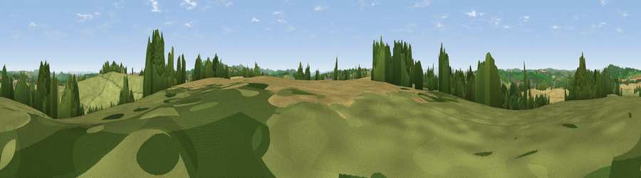

Viewpoint near Bishop's Frome
#18244 in England · top 46% of its area beats it · near Bishop's FromeWhere it is
The exact computed spot (SO 68725 50225). Click the marker for map links.
The view, rendered

A 360° render of this exact spot computed from the terrain model, tree cover and land cover — summer colours, afternoon light, calibrated against photographs of famous viewpoints. Real trees, hedges and buildings will differ in detail.
The panorama
Grey silhouette: terrain skyline in each direction (720 bearings, Earth curvature and refraction included). Dashed green: skyline with trees (+15 m) and buildings (+8 m) as obstacles. Blue strip: how far the ground is visible on each bearing.
Where the view opens
Wedge length = distance to the farthest visible ground on that bearing (vegetation-aware). Rings at 10, 25 and 50 km.
What fills the view
54% grassland · 26% cropland · 19% woodland ·
Angular shares of the visible panorama (visual magnitude), not map area. Landscape diversity 0.45 (0–1 Shannon).
Key numbers
More beautiful places nearby
The staircase of upgrades: each row has a higher view potential than everything closer. Driving times are estimates from straight-line distance, calibrated against real road routing — check an actual route before setting out.
| Place | Direction | Drive | Score |
|---|---|---|---|
| Viewpoint near Suckley | ENE · 1 km | ~3 min | 61.1 |
| Viewpoint near Bishop's Frome | SSW · 2 km | ~5 min | 69.0 |
| Viewpoint near Longley Green | ESE · 3 km | ~7 min | 69.3 |
| Viewpoint near Bromyard | NNW · 5 km | ~11 min | 72.6 |
| Viewpoint near Storridge | E · 6 km | ~13 min | 73.5 |
| High Grove Hill | ESE · 7 km | ~15 min | 74.2 |
| Viewpoint near West Malvern | ESE · 9 km | ~17 min | 81.4 |
| North Hill | ESE · 9 km | ~18 min | 86.8 |
52.14942, -2.45850 · source: screening · position refined by local search. Computed location — check access rights before visiting.